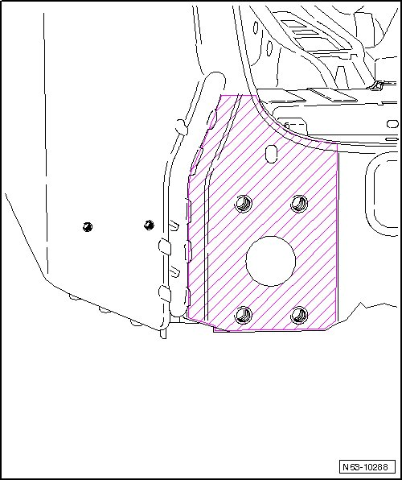
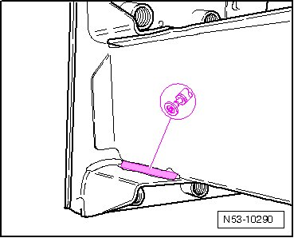
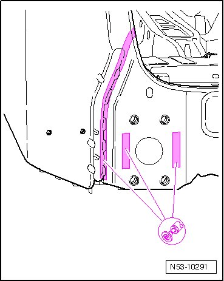
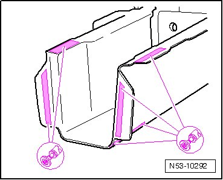
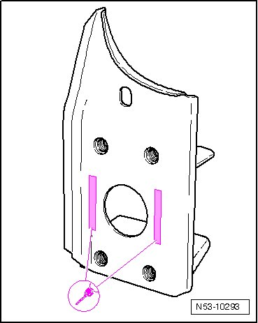
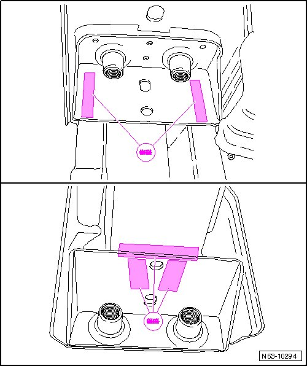
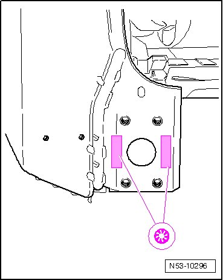

Trailer Hitch Mount
Trailer Hitch Mount
CAUTION!
Observe safety precautions!
Removing
• Cross panel already removed.
• Connecting plate to inner D-pillar reinforcement already removed.

• The floor panel and spare wheel well are depicted as removed for the sake of illustration.
- Separate original joint at top and bottom on longitudinal member.
- Separate original joint at right and left on longitudinal member.

- Separate original joint on mount.

- Remove residual material.

Installation
Replacement part
• Mount
- Drill holes for SG plug weld seam, dia. 10 mm.

Welding
- Align and secure new part with vehicle standing on wheels or alignment bracket set.

- Weld original joint of mount from above and below, gas-shielded arc continuous weld seam.
- Weld original joint of mount at sides from right and left, gas-shielded arc continuous weld seam.
- Weld remaining joint, Gas-shielded arc plug weld seam.

- Install lock carrier.
- Install cross panel.